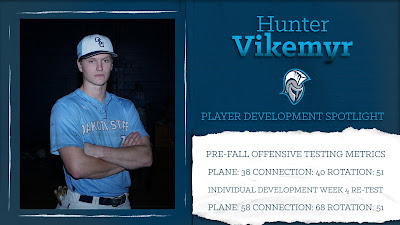
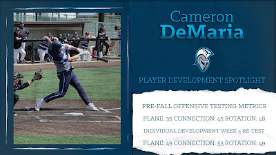
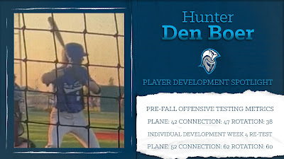
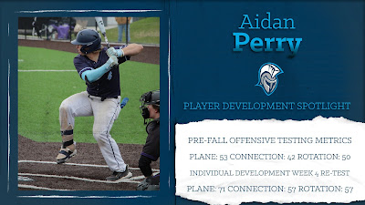

Dakota State Baseball / Offensive player development
2024-2025 DSU Offensive Player Development: A Year In Review
The 2024-2025 baseball season was one riddled with adversity for the DSU offensive staff. Coming off a year where it lost the top 2 hitters in program history as well as 3 other offensive weapons who posted over .300 batting averages in the 2023-2024 season, the group knew they had their work cut out for them. On top of that, the season ahead provided one of the toughest schedules in program history.
From fall baseball up to first pitch in February, the offense at DSU was preparing to face a schedule that included 12 teams ranked in the NAIA pre-season Top 25. Overall, 26 of 50 (52% of the total schedule) scheduled opponents fell under one of the categories listed below:
- Top 25
- Receiving Votes (RV) to be nationally ranked
- National Tournament Qualifier
- Area Ranking Committee (ARC/regionally ranked)
- Played in a Conference Tournament Championship Game
- 30+ wins
Adding to the challenge, were several unfortunate or "freak" injuries that kept multiple starting caliber athletes out of the everyday lineup requiring others within the organization to step up and fill roles.
Regardless, the offense at DSU was able to persevere and add to the track record of offensive success that has been had over the last few years while competing against the best of the best. Here are a few offensive highlights from this past season:
On top of this, the year brought about several standout individual seasons:
| Player | Pos | Honor | AVG/OBP/SLG | HR | 2B | 3B | RBI |
|---|---|---|---|---|---|---|---|
| Cassidy Watt | C | 1st Team All-Conference | .331/.405/.635 | 14 | 12 | - | 50 |
| Cameron DeMaria | 1B/DH | 2nd Team All-Conference | .344/.440/.733 | 14 | 9 | - | 40 |
| Aidan Perry | 2B | 2nd Team All-Conference | .350/.483/.485 | 5 | 7 | - | 26 |
| Hunter Vikemyr | OF | Honorable Mention All-Conference | .329/.416/.463 | 4 | 8 | 1 | 31 |
Lastly, the previous two teams at Dakota State have been able to continue the trend of Trojans in the ranks of professional baseball.
- Bubba Thompson, SSBoise Hawks (Frontier League), Birmingham Bloomfield Beavers (USPBL)
- Walker Hultgren, OFSioux Falls Canaries (American Association)
- Cassidy Watt, CBrantford Red Sox (IBL)
- Darcy Barry, SSAustralian Baseball League
DSU Baseball Offensive Strategy
Before any discussion regarding development can take place it is important that we establish a clear and concise offensive strategy that is the foundation of everything that we do. At DSU our offensive strategy is centered around swinging with the intent to do damage with the goal of producing as many extra base hits as possible. Obviously, much more will go into this, however, in the spirit of getting college baseball players to buy in, this is where we start.
The more in depth definition, however, is centered around training in a way that covers what Driveline has coined "The Big 3" of offensive development: bat speed, bat to ball, and swing decisions. The goal of every game is to score more runs than your opponent and becoming elite in these three areas allows for this goal to be met on a more consistent basis. Along with this we emphasize rhythm and timing to allow for our athletes to better execute when needed. Our approach is geared towards blending development and execution creating a dynamic offense that can adapt to any situation that the game requires. We will touch more on each of these components throughout the entirety of the article, but this is a general introduction to some of the different values we have here at DSU.
Fall 2024
As previously mentioned, the goal is to always be as clear and concise as possible when it comes to offensive development. This began immediately as our offense met on Day 1 to discuss a number of different topics ranging from expectations/offensive identity to Blast Motion terminology. The goal here was to begin the implementation of the learning process as early as possible with each athlete at DSU. This was followed by each individual going through a baseline testing process in which initial swing data (via Blast Motion) and ball flight metrics (via Rapsodo) were collected. Each of our athletes then met one on one with coaches to break down their initial video and numbers. This can be an overwhelming time and it is important to note that the goal was not to have each of our athletes leave the room feeling great about their swing. The intent behind this, again, was to continue to kick start the learning process and shift players away from unconscious incompetence ("You don't know what you don't know") towards conscious incompetence. Here each individual began to understand what they do not know and ideally they are intrinsically motivated to chase their own development. Ultimately, we wanted to foster an environment where critical thinking was encouraged and everyone began to recognize that the majority had spent time doing what they have been told instead of creating and owning their own swing and process.
Once those meetings occurred, the 8 week fall period for Dakota State Baseball officially began. It is a unique blend of individual and team development. During this period of time individual development was centered more around the previously mentioned "Big 3". Each practice our hitters were split into positional groups and put through a rigorous hour of hitting centered around training one of these three areas of focus. Variation is key during this time to fight monotony and extremely high levels of communication and organization were utilized all in the spirit of reducing questions and allowing for the learning process to continue. Overlayed on top of the cage specific work was a daily on field batting practice session in which data and video were collected. Blast Motion and Rapsodo were heavily implemented during this period of time as we tried to collect as much data as possible to allow for a complete understanding of each individual's swing. Along with this, numerous camera angles were used to take video which was then uploaded onto a personal shared Google Drive where our athletes can access and breakdown video. As the fall progressed development narrowed in certain areas for certain individuals as patterns in swing deficits began to appear. Collectively, the individual portion of offensive fall development went from a broad general scope to narrow and personalized. As it came to a close, coaches and players alike had a strong understanding of who each hitter was as well as their strengths and weaknesses.
Looking at the fall from a team based lens, however, provides a different view of development. Along with daily practice our fall consists of scrimmage dates three days a week. This is a period of time where hitters can "test-drive" the different adjustments that they have made. Along similar lines they are also introduced more in depth to in game offensive strategy and expectations regarding how they hit within a lineup. From a coaching perspective these scrimmages provided a wealth of information and data to collect. Here at DSU execution is something that we value heavily and we believe it can be developed. From the first scrimmage to the last we are able to track what we call "Hitting For Us". Essentially, these are moments in the game where a runner is on 2nd base with nobody out or a runner is on 3rd with less than two outs and execution occurs when those runners are moved over or score. Our goal here is 75% execution. We also track each athlete's ability to compete within at bats and be tough outs. Our criteria here consists of seeing 6 plus pitches in an at bat, balls in play, seeing multiple pitches in two strikes, etc. Tracking both Tough Outs and Hitting For Us opportunities allowed for the coaching staff to get a great feel for who could be trusted to execute when necessary. Finally, during this period of time each pitch an individual saw was tracked to allow them to better understand how our pitching staff wanted to get them out. From this, hitters were able to look for patterns and potentially build their approach to cater towards the way they are consistently being pitched.
Overall, fall baseball at Dakota State is a labor of love that delicately balances development and competition in a way that we believe best sets up our athletes for success. By the end of this 8 week period, coaches and players alike have a clear picture of individual strengths, weaknesses, and tendencies.
Winter 2024
Winter at DSU is a favorite for players and coaches alike. Here, player development is pushed even further into the forefront. As has been discussed, an integral part of the fall is data collection and even though that data does get used throughout the fall this time is where it becomes extremely important. The week following our DSU Fall World Series consists of in depth meetings between athletes and the coaching staff to develop individualized plans that are meant to attack the deficits that have shown up during the first 8 weeks of the semester. This is a collaborative process during which the athletes are able to continue to show the ownership that they have taken in their swing. Our athletes walk away from these meetings, once again, with a clear and concise understanding of what the next steps of their development will be.
Simply put, the winter is 4 sets of two week training periods divided by re-test days that allow for progress to be tracked. Each day during this time, hitters utilize their 1 hour time slot to come in and execute their plans. During these hour time slots a coach is present to answer questions and walk alongside our athletes. Following a re-test, metrics will be checked to see if the plan is having its intended effect. If it is, great! We will keep on doing what we are doing. If things haven't trended in the right direction, we will go back to the drawing board, using all of our resources, to continue and search for what will get the athlete back on the right track.
Essentially, this test and re-test process is similar to a doctor prescribing medicine. One athlete may lack bat speed and need to utilize overspeed training in the form of Driveline's overload and underload bats or through throwing medicine balls. Another's bat path may be inefficient and they might need to utilize a paddle bat or a more specified swing adjustment such as using a split grip or starting from their shoulder. A needs based approach allows for each athlete to get what is required on an individual basis while avoiding a cookie cutter one size fits all approach to offensive development.
Now, everything listed above falls under what would be classified as internal work. These are things like swing mechanics, movement patterns, and how the bat gets from Point A to Point B in the most efficient method. Although necessary for learning in our game, the best offensive players have the ability to transfer all of their internal work into an external setting. Here at DSU, we try to expedite this process in the winter by blending in competition days throughout this phase to mimic an in game setting as closely as we can. We utilize Rapsodo to chase ball flight goals and Blast Motion to see if the swing improvements made during the internal days translate over to a more external setting. This provides an opportunity to make adjustments and or bridge the gap between internal and external before it is potentially too late in the spring season. An example of a day like this would be something as simple as playing the game HORSE using the Rapsodo. A hitter steps into the cage, calls his shot to an area of the field and if he executes every other hitter in the group has to go to that same area. As simple as it sounds, a game like this forces a hitter out of the mechanics of his swing and instead turns him towards an external goal in a competitive setting.
This period of the year is also highlighted by an uptick in strength training moving from 3 days a week to 4 days a week. (In the spirit of staying in my own lane I will not touch much on this. However, Coach Max deserves a ton of credit for the work he does with our guys. Much of our offensive success is due to their strength and mobility gains throughout the year.)
Finally, a common theme around this program is that player development is an inherently easy thing to talk about. It is another thing entirely to display progress with concrete evidence to support the strides that have been made. Listed below are graphics that show some of our "top developers" from this past winter period.




Pre-fall offensive testing compared with the individual development week 4 re-test (Blast Motion Plane, Connection and Rotation scores).
Of the 4 athletes listed 3 of them went on to have All-Conference years in the spring. The fourth was a freshman who redshirted and looks to push to make the jump into the Trojan lineup in 2026. Overall, there is no overstating how important of a time the winter is here at DSU. Our athletes have bought in to a meticulous and intense process and all of them (not just the four listed above) deserve a vast amount of credit for the sweat equity that they put into this past school year.
Conclusion
So, what is the point of all of this? First and foremost, the goal here is to celebrate our players and the work that they have put in over the last year. I specifically mentioned a couple standouts throughout this article, but I can not stress enough how thankful I am for the entire group that we had this previous season. Across the board every single one of our guys did a phenomenal job owning their process and buying into the things that we wanted to accomplish. Through all the injuries and adversity they continuously showed up and strived to be the best version of themselves. At the end of the day that is all that I can ask for as a coach. To any current or former Trojans reading this I hope you guys are proud of the resiliency and drive you displayed this year.
This article also serves as a reminder that our process isn't perfect. As I have been putting this together the past couple of weeks I have been constantly reassessing and critiquing the way that I personally go about creating systems designed to better our athletes. One certainty in development is that it takes time. Not just for players, but for coaches as well. Time, to enhance protocols, better understand the learning process, and to know how to better adapt development for each individual player. A conversation I consistently have with freshmen in our program centers around the idea that where they are currently in their careers is the worst they will ever be as a baseball player. The same can be said for myself as a coach. Creating this article forces me to fire with that statement as next year's process/final product should be better than the last. Ultimately, the self reflection here reinforces my drive and desire to be better for our athletes.
Finally, this article serves as a bookend to a chapter in Dakota State Baseball. Moving forward the skeleton of the development process will look similar to what has been written here. The guarantee I can provide to any current and future Trojans, however, is that we will always be tweaking and tuning different aspects to provide our athletes with every tool they need to be great not only in baseball, but in life. The future of the DSU baseball program is bright. Next year will provide a strong returning core and hungry new faces who are itching to make an impact. Everyone involved in this process will be better than they were and we are all excited to get things rolling once again.
Stay tuned.